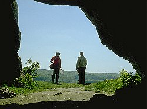

| In English |
| In English |
Ofnethöhlen
Touristische Informationen:
 |
|---|
| Bild: der Eingang der Großen Ofnethöhle. |
| Ort: | 4,5km südwestlich Nörlingen. A7 Ausfahrt Heidenheim, Richtung Nördlingen üner Neresheim, Nattheim. Am Steinbruch/römischen Gutshof 5km vor Nördlingen links ab. Parken am römischen Gutshof. 15min Fußweg. |
| Typ: | Kalkhöhlen, archäologische Fundstätte. |
| Dimension: |
Große Ofnet: A=520m N.N., L=30m, Portal: B=6m, H=4m. Kleine Ofnet: A=525m N.N., L=15m, Portal: B=4m, H=2,70m. |
| Fotografieren: | |
| Zugänglichkeit: | |
| Literatur: |
E. Frickhinger (1939):
Das Himmelreich mit den Ofnethöhlen,
Schwabenland, 1939. |
| Adresse: | Verkehrsamt der Stadt Nördlingen, Marktplatz 2, 86720 Nördlingen im Ries, Tel: +49-9081-4380 und 84116, Fax: +49-9081-84113 |
| Nach unserem Wissen sind die Angaben für das in eckigen Klammern angegebene Jahr korrekt. Allerdings können sich Öffnungszeiten und Preise schnell ändern, ohne daß wir benachrichtigt werden. Bitte prüfen Sie bei Bedarf die aktuellen Werte beim Betreiber, zum Beispiel auf der offiziellen Website in der Linkliste. |
|
| Stand: | $Date: 2015/11/20 13:24:05 $ |
Geschichte
Bemerkungen
|  |
| Bild: die Kleine Ofnethöhle von Innen. |
Die Ofnethöhlen befinden sich unweit von Nördlingen im Außenwand der Nördlinger Ries Ringwalls. Deshalb zuerst ein paar Worte zu dieser geologisch hochinteressanten und spektakulären Erscheinung.
Das Nördlinger Ries ist einer der größten Meteorkrater der Welt mit 24 bis 25km Durchmesser. Es entstand durch den Einschlag eines Steinmeteoriten vor 14,7 Million years (im Obermiozän). Der Krater wurde in den Warmzeiten seit dem Impaktereignis durch Süßwassersedimente verfüllt. Später wurde der oberste Teil davon von den Schmelzwassern der Eiszeitgletscher wieder ausgeräumt, so dass der Krater wieder als Hohlform zu erkennen ist. Die Sedimente im Krater sind jedoch viel jünger als in der Umgebung und meist sehr fossilienreich.
Nördlingen befindet sich innerhalb des Kraters, auf einer fruchtbaren Ebene. Weitere Informationen bietet das Rieskrater Museum in Nördlingen (Hintere Gerbergasse 3, Tel: +49-9081-84143).
Die Ofnethöhlen befinden sich im Ringwall des Kraters. Es handelt sich um Höhlenruinen, die auf der riesabgewandten Seite von einem Trockental angeschnitten worden sind. Die beiden Höhlen heißen Große Ofnet und Kleine Ofnet.
Die Ofnethöhlen waren vom Moustérien (Mittelpaläolithikum, 40.000 a) bis ins Magdalénien und in der Mittelsteinzeit bewohnt. Bei Ausgrabungen wurden Tierreste und Grabbeigaben gefunden: 4000 gelochte Schnecken, 200 durchbohrte Hirschzähne (Schmuck?).
Besonders spektakulär waren die Funde der Schädel, die in Nestern angeordnet waren. Ein nest mit 27 Schädeln und ein Nest mit 6 Schädeln in Rötel gebettet und mit Ketten aus Hirschgranteln, beide aus der Mittelsteinzeit. Unverheilte Schädelverletzungen lassen auf gewaltsamen Tod schließen. Ob es Opfer des eigenen Stammes bei gewalttätigen Auseinandersetzungen, Unfallopfer oder Feinde sind läßt sich heute nicht mehr endgültig klären.
 |
| Ofnethöhlen Gallerie |
 Search Google for "Ofnethöhlen"
Search Google for "Ofnethöhlen" Google Earth Placemark
Google Earth Placemark Das Ries
Das Ries